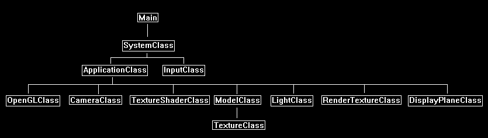
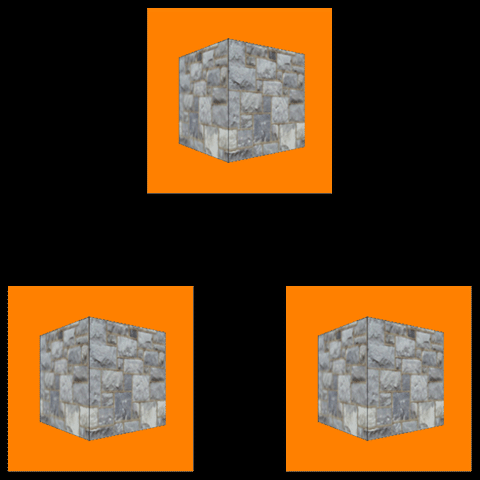

This tutorial will cover how to implement render to texture in OpenGL 4.0.
The code in this tutorial is based on the previous tutorials.
Render to texture allows you to render your scene to a texture resource instead of just the back buffer.
You can then use that texture resource in your current scene to achieve numerous effects.
For example, you could render the scene from a different camera angle and then use that texture in a mirror or video screen.
You can also do some processing on that texture or use a special shader to render it to achieve even more unique effects.
The list of things you can do with render textures are endless and is the reason why it is one of the most powerful tools in OpenGL 4.0.
However you will notice that render textures are very expensive as you are now rendering your scene multiple times instead of just once.
This is where most 3D engines will start to lose their speed, but the effects that can be done make it worth the cost.
For this tutorial we will render the spinning 3D cube model to a render texture first.
We will then render our main scene using three flat 3D planes.
Each 3D plane will use the render texture as it's texture resource.
The render texture will be given an orange background so you can see exactly what is the render texture.
We will start the tutorial by looking at the updated frame work.
Framework
The frame work has two new classes called RenderTextureClass and DisplayPlaneClass.

Rendertextureclass.h
The RenderTextureClass allows you to set it as the render target instead of the back buffer.
It also allows you to retrieve the data rendered to it in the form of a regular texture.
////////////////////////////////////////////////////////////////////////////////
// Filename: rendertextureclass.h
////////////////////////////////////////////////////////////////////////////////
#ifndef _RENDERTEXTURECLASS_H_
#define _RENDERTEXTURECLASS_H_
///////////////////////
// MY CLASS INCLUDES //
///////////////////////
#include "openglclass.h"
////////////////////////////////////////////////////////////////////////////////
// Class name: RenderTextureClass
////////////////////////////////////////////////////////////////////////////////
class RenderTextureClass
{
public:
RenderTextureClass();
RenderTextureClass(const RenderTextureClass&);
~RenderTextureClass();
bool Initialize(OpenGLClass*, int, int, float, float, int);
void Shutdown();
void SetRenderTarget();
void ClearRenderTarget(float, float, float, float);
void SetTexture(unsigned int);
int GetTextureWidth();
int GetTextureHeight();
void GetProjectionMatrix(float*);
void GetOrthoMatrix(float*);
private:
OpenGLClass* m_OpenGLPtr;
int m_textureWidth, m_textureHeight;
unsigned int m_frameBufferId, m_textureID, m_depthBufferId;
float m_projectionMatrix[16], m_orthoMatrix[16];
};
#endif
Rendertextureclass.cpp
////////////////////////////////////////////////////////////////////////////////
// Filename: rendertextureclass.cpp
////////////////////////////////////////////////////////////////////////////////
#include "rendertextureclass.h"
RenderTextureClass::RenderTextureClass()
{
m_OpenGLPtr = 0;
}
RenderTextureClass::RenderTextureClass(const RenderTextureClass& other)
{
}
RenderTextureClass::~RenderTextureClass()
{
}
The Initialize function will do the setup of the render texture object.
It creates an object called a frame buffer which is a render target that can have attachments such as depth buffers, stencil buffers, textures, and so forth.
For the purposes of this tutorial, we will create the frame buffer, and then create and attach a texture and a depth buffer.
This function will also create a projection and ortho matrix for correct perspective rendering of the render texture, since the dimensions of the render texture may vary.
bool RenderTextureClass::Initialize(OpenGLClass* OpenGL, int textureWidth, int textureHeight, float screenNear, float screenDepth, int format)
{
int textureFormat;
unsigned int drawBuffersArray[1];
float fieldOfView, screenAspect;
// Store a pointer to the OpenGL object.
m_OpenGLPtr = OpenGL;
// Store the width and height of the render texture.
m_textureWidth = textureWidth;
m_textureHeight = textureHeight;
// Set the texture format.
switch(format)
{
case 0:
{
textureFormat = GL_RGBA;
break;
}
default:
{
textureFormat = GL_RGBA;
break;
}
}
// Generate an ID for the frame buffer and bind the frame buffer.
m_OpenGLPtr->glGenFramebuffers(1, &m_frameBufferId);
m_OpenGLPtr->glBindFramebuffer(GL_FRAMEBUFFER, m_frameBufferId);
// Set the texture unit we are working with.
m_OpenGLPtr->glActiveTexture(GL_TEXTURE0 + 0);
// Generate an ID for the texture and bind the 2D texture.
glGenTextures(1, &m_textureID);
glBindTexture(GL_TEXTURE_2D, m_textureID);
// Create an empty texture with our desired format settings and no mipmapping.
glTexImage2D(GL_TEXTURE_2D, 0, textureFormat, m_textureWidth, m_textureHeight, 0, textureFormat, GL_UNSIGNED_BYTE, NULL);
glTexParameteri(GL_TEXTURE_2D, GL_TEXTURE_MAG_FILTER, GL_LINEAR);
glTexParameteri(GL_TEXTURE_2D, GL_TEXTURE_MIN_FILTER, GL_LINEAR);
// Now attach the texture that was just created to the frame buffer.
m_OpenGLPtr->glFramebufferTexture2D(GL_FRAMEBUFFER, GL_COLOR_ATTACHMENT0, GL_TEXTURE_2D, m_textureID, 0);
// Next generate and ID for a depth buffer and bind the depth buffer.
m_OpenGLPtr->glGenRenderbuffers(1, &m_depthBufferId);
m_OpenGLPtr->glBindRenderbuffer(GL_RENDERBUFFER, m_depthBufferId);
// Create the depth buffer.
m_OpenGLPtr->glRenderbufferStorage(GL_RENDERBUFFER, GL_DEPTH_COMPONENT, m_textureWidth, m_textureHeight);
// Attach the depth buffer to the frame buffer.
m_OpenGLPtr->glFramebufferRenderbuffer(GL_FRAMEBUFFER, GL_DEPTH_ATTACHMENT, GL_RENDERBUFFER, m_depthBufferId);
// Now set the format for the pixel shader output when rendering with this frame buffer.
drawBuffersArray[0] = GL_COLOR_ATTACHMENT0;
m_OpenGLPtr->glDrawBuffers(1, drawBuffersArray);
// Now that we are done setting up the render texture frame buffer, we can switch back to the regular back buffer that is used for rendering.
m_OpenGLPtr->glBindFramebuffer(GL_FRAMEBUFFER, 0);
// Setup the projection matrix for this render texture's dimensions.
fieldOfView = 3.14159265358979323846f / 4.0f;
screenAspect = (float)m_textureWidth / (float)m_textureHeight;
m_OpenGLPtr->BuildPerspectiveFovMatrix(m_projectionMatrix, fieldOfView, screenAspect, screenNear, screenDepth);
// Create an orthographic projection matrix for this render texture's dimensions.
m_OpenGLPtr->BuildOrthoMatrix(m_orthoMatrix, (float)m_textureWidth, (float)m_textureHeight, screenNear, screenDepth);
return true;
}
The Shutdown function will release depth buffer, texture, and frame buffer that we created in the Initialize function.
It also releases the pointer to the OpenGL class object.
void RenderTextureClass::Shutdown()
{
// Release the depth buffer.
m_OpenGLPtr->glDeleteRenderbuffers(1, &m_depthBufferId);
// Release the texture.
glDeleteTextures(1, &m_textureID);
// Release the frame buffer.
m_OpenGLPtr->glDeleteFramebuffers(1, &m_frameBufferId);
// Release the pointer to the OpenGL object.
m_OpenGLPtr = 0;
return;
}
The SetRenderTarget function changes where we are currently rendering to.
We are usually rendering to the back buffer (or another render texture), but when we call this function, we will now be rendering to this render texture.
It binds the frame buffer that we setup in the Initialize function which has our texture and depth buffer attached to it.
So, rendering will now go directly to the texture in this object that is referenced by m_textureID.
Note that we also need to set the viewport for this render texture, since the dimensions might be different than the back buffer or wherever we were rendering to before this function was called.
void RenderTextureClass::SetRenderTarget()
{
// Set the frame buffer (and its attached texture and depth buffer) as the render target.
m_OpenGLPtr->glBindFramebuffer(GL_FRAMEBUFFER, m_frameBufferId);
// Set the viewport to be the correct dimensions for the texture dimensions used.
glViewport(0, 0, m_textureWidth, m_textureHeight);
return;
}
The ClearRenderTarget function is called right before rendering to this render texture so that the texture and the depth buffer are cleared from their previous contents.
void RenderTextureClass::ClearRenderTarget(float red, float green, float blue, float alpha)
{
// Clear the back buffer.
glClearColor(red, green, blue, alpha);
// Clear the depth buffer.
glClear(GL_COLOR_BUFFER_BIT | GL_DEPTH_BUFFER_BIT);
return;
}
The SetTexture function gives us access to the texture for this render texture object.
Once the render texture has been rendered to the data of this texture is now useable as a shader texture the same as any other TextureClass object.
void RenderTextureClass::SetTexture(unsigned int textureUnit)
{
// Set the texture unit we are working with.
m_OpenGLPtr->glActiveTexture(GL_TEXTURE0 + textureUnit);
// Bind the texture as a 2D texture.
glBindTexture(GL_TEXTURE_2D, m_textureID);
return;
}
The following four helper functions return the dimensions, the projection matrix, and ortho matrix for this render texture object.
int RenderTextureClass::GetTextureWidth()
{
return m_textureWidth;
}
int RenderTextureClass::GetTextureHeight()
{
return m_textureHeight;
}
void RenderTextureClass::GetProjectionMatrix(float* matrix)
{
matrix[0] = m_projectionMatrix[0];
matrix[1] = m_projectionMatrix[1];
matrix[2] = m_projectionMatrix[2];
matrix[3] = m_projectionMatrix[3];
matrix[4] = m_projectionMatrix[4];
matrix[5] = m_projectionMatrix[5];
matrix[6] = m_projectionMatrix[6];
matrix[7] = m_projectionMatrix[7];
matrix[8] = m_projectionMatrix[8];
matrix[9] = m_projectionMatrix[9];
matrix[10] = m_projectionMatrix[10];
matrix[11] = m_projectionMatrix[11];
matrix[12] = m_projectionMatrix[12];
matrix[13] = m_projectionMatrix[13];
matrix[14] = m_projectionMatrix[14];
matrix[15] = m_projectionMatrix[15];
return;
}
void RenderTextureClass::GetOrthoMatrix(float* matrix)
{
matrix[0] = m_orthoMatrix[0];
matrix[1] = m_orthoMatrix[1];
matrix[2] = m_orthoMatrix[2];
matrix[3] = m_orthoMatrix[3];
matrix[4] = m_orthoMatrix[4];
matrix[5] = m_orthoMatrix[5];
matrix[6] = m_orthoMatrix[6];
matrix[7] = m_orthoMatrix[7];
matrix[8] = m_orthoMatrix[8];
matrix[9] = m_orthoMatrix[9];
matrix[10] = m_orthoMatrix[10];
matrix[11] = m_orthoMatrix[11];
matrix[12] = m_orthoMatrix[12];
matrix[13] = m_orthoMatrix[13];
matrix[14] = m_orthoMatrix[14];
matrix[15] = m_orthoMatrix[15];
return;
}
Displayplaneclass.h
The DisplayPlaneClass is an object that creates a 2D plane made up of two triangles.
It can be rendered anywhere in 3D space.
This makes it the perfect object for testing the render texture.
It works similar to the BitmapClass, but it is meant for 3D rendering instead.
////////////////////////////////////////////////////////////////////////////////
// Filename: displayplaneclass.h
////////////////////////////////////////////////////////////////////////////////
#ifndef _DISPLAYPLANECLASS_H_
#define _DISPLAYPLANECLASS_H_
///////////////////////
// MY CLASS INCLUDES //
///////////////////////
#include "openglclass.h"
////////////////////////////////////////////////////////////////////////////////
// Class Name: DisplayPlaneClass
////////////////////////////////////////////////////////////////////////////////
class DisplayPlaneClass
{
private:
struct VertexType
{
float x, y, z;
float tu, tv;
};
public:
DisplayPlaneClass();
DisplayPlaneClass(const DisplayPlaneClass&);
~DisplayPlaneClass();
bool Initialize(OpenGLClass*, float, float);
void Shutdown();
void Render();
private:
bool InitializeBuffers(float, float);
void ShutdownBuffers();
void RenderBuffers();
private:
OpenGLClass* m_OpenGLPtr;
int m_vertexCount, m_indexCount;
unsigned int m_vertexArrayId, m_vertexBufferId, m_indexBufferId;
};
#endif
Displayplaneclass.cpp
////////////////////////////////////////////////////////////////////////////////
// Filename: displayplaneclass.cpp
////////////////////////////////////////////////////////////////////////////////
#include "displayplaneclass.h"
DisplayPlaneClass::DisplayPlaneClass()
{
m_OpenGLPtr = 0;
}
DisplayPlaneClass::DisplayPlaneClass(const DisplayPlaneClass& other)
{
}
DisplayPlaneClass::~DisplayPlaneClass()
{
}
bool DisplayPlaneClass::Initialize(OpenGLClass* OpenGL, float width, float height)
{
bool result;
// Store a pointer to the OpenGL object.
m_OpenGLPtr = OpenGL;
// Initialize the vertex and index buffer that hold the geometry for the display plane.
result = InitializeBuffers(width, height);
if(!result)
{
return false;
}
return true;
}
void DisplayPlaneClass::Shutdown()
{
// Release the vertex and index buffers.
ShutdownBuffers();
// Release the pointer to the OpenGL object.
m_OpenGLPtr = 0;
return;
}
void DisplayPlaneClass::Render()
{
// Put the vertex and index buffers on the graphics pipeline to prepare them for drawing.
RenderBuffers();
return;
}
The width and height input are in 3D coordinates.
For example in this tutorial the width and height are both 1.0f.
Make sure that the aspect ratio used to create the DisplayPlane object correlates to the dimensions used to create the render texture, otherwise the texture will be stretched incorrectly.
bool DisplayPlaneClass::InitializeBuffers(float width, float height)
{
VertexType* vertices;
unsigned int* indices;
int i;
// Set the number of vertices in the vertex array.
m_vertexCount = 6;
// Set the number of indices in the index array.
m_indexCount = m_vertexCount;
// Create the vertex array.
vertices = new VertexType[m_vertexCount];
// Create the index array.
indices = new unsigned int[m_indexCount];
// Load the vertex array with data.
// First triangle.
vertices[0].x = -width; // Top left.
vertices[0].y = height;
vertices[0].z = 0.0f;
vertices[0].tu = 0.0f;
vertices[0].tv = 1.0f;
vertices[1].x = width; // Bottom right.
vertices[1].y = -height;
vertices[1].z = 0.0f;
vertices[1].tu = 1.0f;
vertices[1].tv = 0.0f;
vertices[2].x = -width; // Bottom left.
vertices[2].y = -height;
vertices[2].z = 0.0f;
vertices[2].tu = 0.0f;
vertices[2].tv = 0.0f;
// Second triangle.
vertices[3].x = -width; // Top left.
vertices[3].y = height;
vertices[3].z = 0.0f;
vertices[3].tu = 0.0f;
vertices[3].tv = 1.0f;
vertices[4].x = width; // Top right.
vertices[4].y = height;
vertices[4].z = 0.0f;
vertices[4].tu = 1.0f;
vertices[4].tv = 1.0f;
vertices[5].x = width; // Bottom right.
vertices[5].y = -height;
vertices[5].z = 0.0f;
vertices[5].tu = 1.0f;
vertices[5].tv = 0.0f;
// Load the index array with data.
for(i=0; i<m_indexCount; i++)
{
indices[i] = i;
}
// Allocate an OpenGL vertex array object.
m_OpenGLPtr->glGenVertexArrays(1, &m_vertexArrayId);
// Bind the vertex array object to store all the buffers and vertex attributes we create here.
m_OpenGLPtr->glBindVertexArray(m_vertexArrayId);
// Generate an ID for the vertex buffer.
m_OpenGLPtr->glGenBuffers(1, &m_vertexBufferId);
// Bind the vertex buffer and load the vertex data into the vertex buffer.
m_OpenGLPtr->glBindBuffer(GL_ARRAY_BUFFER, m_vertexBufferId);
m_OpenGLPtr->glBufferData(GL_ARRAY_BUFFER, m_vertexCount * sizeof(VertexType), vertices, GL_STATIC_DRAW);
// Enable the two vertex array attributes.
m_OpenGLPtr->glEnableVertexAttribArray(0); // Vertex position.
m_OpenGLPtr->glEnableVertexAttribArray(1); // Texture coordinates.
// Specify the location and format of the position portion of the vertex buffer.
m_OpenGLPtr->glVertexAttribPointer(0, 3, GL_FLOAT, false, sizeof(VertexType), 0);
// Specify the location and format of the texture coordinates portion of the vertex buffer.
m_OpenGLPtr->glVertexAttribPointer(1, 2, GL_FLOAT, false, sizeof(VertexType), (unsigned char*)NULL + (3 * sizeof(float)));
// Generate an ID for the index buffer.
m_OpenGLPtr->glGenBuffers(1, &m_indexBufferId);
// Bind the index buffer and load the index data into it.
m_OpenGLPtr->glBindBuffer(GL_ELEMENT_ARRAY_BUFFER, m_indexBufferId);
m_OpenGLPtr->glBufferData(GL_ELEMENT_ARRAY_BUFFER, m_indexCount* sizeof(unsigned int), indices, GL_STATIC_DRAW);
// Now that the buffers have been loaded we can release the array data.
delete [] vertices;
vertices = 0;
delete [] indices;
indices = 0;
return true;
}
void DisplayPlaneClass::ShutdownBuffers()
{
// Release the vertex array object.
m_OpenGLPtr->glBindVertexArray(0);
m_OpenGLPtr->glDeleteVertexArrays(1, &m_vertexArrayId);
// Release the vertex buffer.
m_OpenGLPtr->glBindBuffer(GL_ARRAY_BUFFER, 0);
m_OpenGLPtr->glDeleteBuffers(1, &m_vertexBufferId);
// Release the index buffer.
m_OpenGLPtr->glBindBuffer(GL_ELEMENT_ARRAY_BUFFER, 0);
m_OpenGLPtr->glDeleteBuffers(1, &m_indexBufferId);
return;
}
void DisplayPlaneClass::RenderBuffers()
{
// Bind the vertex array object that stored all the information about the vertex and index buffers.
m_OpenGLPtr->glBindVertexArray(m_vertexArrayId);
// Render the vertex buffer using the index buffer.
glDrawElements(GL_TRIANGLES, m_indexCount, GL_UNSIGNED_INT, 0);
return;
}
Applicationclass.h
The ApplicationClass now includes the RenderTextureClass and DisplayPlaneClass.
////////////////////////////////////////////////////////////////////////////////
// Filename: applicationclass.h
////////////////////////////////////////////////////////////////////////////////
#ifndef _APPLICATIONCLASS_H_
#define _APPLICATIONCLASS_H_
/////////////
// GLOBALS //
/////////////
const bool FULL_SCREEN = false;
const bool VSYNC_ENABLED = true;
const float SCREEN_NEAR = 0.3f;
const float SCREEN_DEPTH = 1000.0f;
///////////////////////
// MY CLASS INCLUDES //
///////////////////////
#include "inputclass.h"
#include "openglclass.h"
#include "modelclass.h"
#include "cameraclass.h"
#include "textureshaderclass.h"
#include "rendertextureclass.h"
#include "displayplaneclass.h"
////////////////////////////////////////////////////////////////////////////////
// Class Name: ApplicationClass
////////////////////////////////////////////////////////////////////////////////
class ApplicationClass
{
public:
ApplicationClass();
ApplicationClass(const ApplicationClass&);
~ApplicationClass();
bool Initialize(Display*, Window, int, int);
void Shutdown();
bool Frame(InputClass*);
private:
bool RenderSceneToTexture(float);
bool Render();
private:
OpenGLClass* m_OpenGL;
ModelClass* m_Model;
CameraClass* m_Camera;
TextureShaderClass* m_TextureShader;
RenderTextureClass* m_RenderTexture;
DisplayPlaneClass* m_DisplayPlane;
};
#endif
Applicationclass.cpp
////////////////////////////////////////////////////////////////////////////////
// Filename: applicationclass.cpp
////////////////////////////////////////////////////////////////////////////////
#include "applicationclass.h"
ApplicationClass::ApplicationClass()
{
m_OpenGL = 0;
m_Model = 0;
m_Camera = 0;
m_TextureShader = 0;
m_RenderTexture = 0;
m_DisplayPlane = 0;
}
ApplicationClass::ApplicationClass(const ApplicationClass& other)
{
}
ApplicationClass::~ApplicationClass()
{
}
bool ApplicationClass::Initialize(Display* display, Window win, int screenWidth, int screenHeight)
{
char modelFilename[128];
char textureFilename[128];
bool result;
// Create and initialize the OpenGL object.
m_OpenGL = new OpenGLClass;
result = m_OpenGL->Initialize(display, win, screenWidth, screenHeight, SCREEN_NEAR, SCREEN_DEPTH, VSYNC_ENABLED);
if(!result)
{
cout << "Error: Could not initialize the OpenGL object." << endl;
return false;
}
// Create and initialize the camera object.
m_Camera = new CameraClass;
m_Camera->SetPosition(0.0f, 0.0f, -5.0f);
m_Camera->Render();
Setup the regular cube model for rendering.
// Set the file name of the model.
strcpy(modelFilename, "../Engine/data/cube.txt");
// Set the file name of the texture.
strcpy(textureFilename, "../Engine/data/stone01.tga");
// Create and initialize the model object.
m_Model = new ModelClass;
result = m_Model->Initialize(m_OpenGL, modelFilename, textureFilename, false, NULL, false, NULL, false);
if(!result)
{
cout << "Error: Could not initialize the model object." << endl;
return false;
}
We will use the TextureShaderClass for rendering the cube scene as well as the display planes.
// Create and initialize the texture shader object.
m_TextureShader = new TextureShaderClass;
result = m_TextureShader->Initialize(m_OpenGL);
if(!result)
{
cout << "Error: Could not initialize the texture shader object." << endl;
return false;
}
We create the render texture object here.
The resolution is set to 256x256.
We use the same settings for the render texture's depth buffer as we do for the regular screen.
// Create and initialize the render to texture object.
m_RenderTexture = new RenderTextureClass;
result = m_RenderTexture->Initialize(m_OpenGL, 256, 256, SCREEN_NEAR, SCREEN_DEPTH, 0);
if(!result)
{
cout << "Error: Could not initialize the render texture object." << endl;
return false;
}
We setup the DisplayPlaneClass here and use a 1.0f x 1.0f sized plane to match the aspect ratio of the 256x256 render texture.
You could make this bigger such as 2.0f x 2.0f for example, but make sure it stays the same aspect as the render texture.
// Create and initialize the display plane object.
m_DisplayPlane = new DisplayPlaneClass;
result = m_DisplayPlane->Initialize(m_OpenGL, 1.0f, 1.0f);
if(!result)
{
cout << "Error: Could not initialize the display plane object." << endl;
return false;
}
return true;
}
void ApplicationClass::Shutdown()
{
// Release the display plane object.
if(m_DisplayPlane)
{
m_DisplayPlane->Shutdown();
delete m_DisplayPlane;
m_DisplayPlane = 0;
}
// Release the render to texture object.
if(m_RenderTexture)
{
m_RenderTexture->Shutdown();
delete m_RenderTexture;
m_RenderTexture = 0;
}
// Release the texture shader object.
if(m_TextureShader)
{
m_TextureShader->Shutdown();
delete m_TextureShader;
m_TextureShader = 0;
}
// Release the model object.
if(m_Model)
{
m_Model->Shutdown();
delete m_Model;
m_Model = 0;
}
// Release the camera object.
if(m_Camera)
{
delete m_Camera;
m_Camera = 0;
}
// Release the OpenGL object.
if(m_OpenGL)
{
m_OpenGL->Shutdown();
delete m_OpenGL;
m_OpenGL = 0;
}
return;
}
bool ApplicationClass::Frame(InputClass* Input)
{
static float rotation = 360.0f;
bool result;
// Check if the escape key has been pressed, if so quit.
if(Input->IsEscapePressed() == true)
{
return false;
}
// Update the rotation variable each frame.
rotation -= 0.0174532925f * 1.0f;
if(rotation <= 0.0f)
{
rotation += 360.0f;
}
So, an important change in our Frame function is that we first render our rotating cube scene to a texture first before anything else.
Once that is complete then we render our final 3D scene which will use the render texture results generated in the RenderSceneToTexture function.
// Render the scene to a render texture.
result = RenderSceneToTexture(rotation);
if(!result)
{
return false;
}
// Render the final graphics scene.
result = Render();
if(!result)
{
return false;
}
return true;
}
bool ApplicationClass::RenderSceneToTexture(float rotation)
{
float worldMatrix[16], viewMatrix[16], projectionMatrix[16];
bool result;
The first part in the RenderSceneToTexture is where we change the rendering output from the back buffer to our render texture object.
We also clear the render texture to orange here.
// Set the render target to be the render texture and clear it.
m_RenderTexture->SetRenderTarget();
m_RenderTexture->ClearRenderTarget(1.0f, 0.5f, 0.0f, 1.0f);
Now we set our camera position here first before getting the resulting view matrix from the camera.
Since we are just using one camera, we need to set it each frame since the Render function also uses it from a different position.
// Set the position of the camera for viewing the cube.
m_Camera->SetPosition(0.0f, 0.0f, -5.0f);
m_Camera->Render();
Important: When we get our matrices we have to get the projection matrix from the render texture as it has different dimensions then our regular screen projection matrix.
If your render textures ever look rendered incorrectly, it's usually because you are using the wrong projection matrix.
// Get the matrices.
m_OpenGL->GetWorldMatrix(worldMatrix);
m_Camera->GetViewMatrix(viewMatrix);
m_RenderTexture->GetProjectionMatrix(projectionMatrix);
Now we render our regular spinning cube scene as normal, but the output is now going to the render texture.
// Rotate the world matrix by the rotation value so that the triangle will spin.
m_OpenGL->MatrixRotationY(worldMatrix, rotation);
// Set the texture shader as the current shader program and set the matrices that it will use for rendering.
result = m_TextureShader->SetShaderParameters(worldMatrix, viewMatrix, projectionMatrix);
if(!result)
{
return false;
}
// Render the model.
m_Model->SetTexture1(0);
m_Model->Render();
Once we are done rendering we need to switch the rendering back to the original back buffer.
We also need to switch the viewport back to the original since the render texture's viewport may have different dimensions then the screen's viewport.
// Reset the render target back to the original back buffer and not the render to texture anymore. And reset the viewport back to the original.
m_OpenGL->SetBackBufferRenderTarget();
m_OpenGL->ResetViewport();
return true;
}
bool ApplicationClass::Render()
{
float worldMatrix[16], viewMatrix[16], projectionMatrix[16];
bool result;
Now we render our regular 3D scene.
Note the camera is positioned differently so we have to get a new view matrix rendered from it.
// Clear the buffers to begin the scene.
m_OpenGL->BeginScene(0.0f, 0.0f, 0.0f, 1.0f);
// Set the position of the camera for viewing the display planes with the render textures on them.
m_Camera->SetPosition(0.0f, 0.0f, -10.0f);
m_Camera->Render();
// Get the world, view, and projection matrices from the opengl and camera objects.
m_OpenGL->GetWorldMatrix(worldMatrix);
m_Camera->GetViewMatrix(viewMatrix);
m_OpenGL->GetProjectionMatrix(projectionMatrix);
Next we render the first display plane using the render texture as its texture resource.
Note the camera is positioned differently so we have to get a new view matrix rendered from it.
// Setup matrices - Top display plane.
m_OpenGL->MatrixTranslation(worldMatrix, 0.0f, 1.5f, 0.0f);
// Set the texture shader as the current shader program and set the matrices that it will use for rendering.
result = m_TextureShader->SetShaderParameters(worldMatrix, viewMatrix, projectionMatrix); if(!result) { return false; }
// Set the render texture as the texture to be used and then render the display plane.
m_RenderTexture->SetTexture(0);
m_DisplayPlane->Render();
Next, we render the second display plane using the same render texture.
// Setup matrices - Bottom left display plane.
m_OpenGL->MatrixTranslation(worldMatrix, -1.5f, -1.5f, 0.0f);
// Set the texture shader as the current shader program and set the matrices that it will use for rendering.
result = m_TextureShader->SetShaderParameters(worldMatrix, viewMatrix, projectionMatrix); if(!result) { return false; }
// Set the render texture as the texture to be used and then render the display plane.
m_RenderTexture->SetTexture(0);
m_DisplayPlane->Render();
And finally, we render our third display plane using the same render texture.
// Setup matrices - Bottom right display plane.
m_OpenGL->MatrixTranslation(worldMatrix, 1.5f, -1.5f, 0.0f);
// Set the texture shader as the current shader program and set the matrices that it will use for rendering.
result = m_TextureShader->SetShaderParameters(worldMatrix, viewMatrix, projectionMatrix); if(!result) { return false; }
// Set the render texture as the texture to be used and then render the display plane.
m_RenderTexture->SetTexture(0);
m_DisplayPlane->Render();
// Present the rendered scene to the screen.
m_OpenGL->EndScene();
return true;
}
Summary
Now you should understand the basics of how to use render textures.

To Do Exercises
1. Recompile the project and run it. You should get a spinning cube on three display planes showing the render texture effect.
2. Change the 3D scene that is being rendered to texture to something else. Also change the background color from orange to a different color.
3. Add a fourth display plane.
4. Change the camera angle at which the render texture sees your 3D scene.
Source Code
Source Code and Data Files: gl4linuxtut25_src.tar.gz